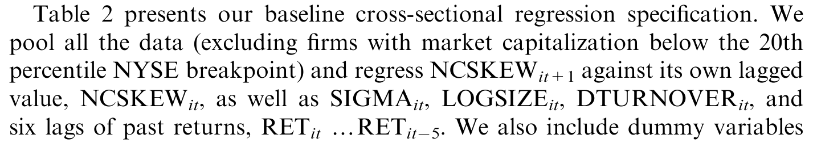
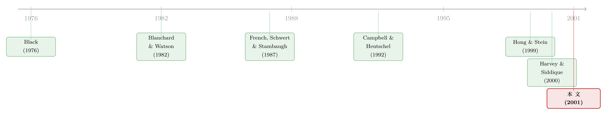

暴跌从不打招呼，但它会先在成交量里留下脚印
本文读的是 Chen, Hong & Stein (2001, JFE)：作者用一组横截面回归去「预报」个股日收益的条件偏度，发现两件事最能预示一只股票将来更容易崩——一是过去六个月换手率相对趋势的异常上升，二是过去（最长可追溯 36 个月的）累计正收益。前者印证了 Hong-Stein (1999) 的「分歧+卖空约束」模型，后者则与 Blanchard-Watson (1982) 的随机泡沫一脉相承。
1 一个被人忽视的「不对称」
先抛一个事实。自 1947 年以来，标普 500 指数十次最大的单日波动里，有九次是下跌。换句话说，市场更容易「熔断式」地崩，而不是「井喷式」地涨。
这并不是个孤例般的巧合。一大批文献早就用各种方式记录了同一件事：市场收益是负偏的（negatively skewed），或者更精确地说，存在所谓「非对称波动率（asymmetric volatility）」——波动率倾向于在价格下跌时上升。再加上 1987 年股灾之后，股指期权的隐含波动率长期呈现「虚值看跌期权远贵于虚值看涨期权」的形态，业界给它起了个形象的名字：波动率的「狞笑（smirk）」。
于是，一个自然的问题浮出水面：这种负偏到底从哪里来？
教科书给了三套老答案。第一套是杠杆效应 (leverage effect, Black 1976; Christie 1982)：股价一跌，经营和财务杠杆都被动抬高，后续波动随之放大。第二套是波动率反馈 (volatility feedback, Pindyck 1984; French et al. 1987; Campbell & Hentschel 1992)：好消息会同时抬高风险溢价，从而部分抵消自己的正面冲击；坏消息却两头叠加，被放大。第三套是随机泡沫 (stochastic bubbles, Blanchard & Watson 1982)：泡沫破裂本身就是一个小概率、却带来巨大负收益的事件。
但这三套答案有一个共同的「软肋」——它们都能被装进代表性投资者 (representative-investor) 的框架里，而经验上又都被质疑「量级不够」：杠杆效应解释不了日度数据里的不对称（Schwert 1989; Bekaert & Wu 2000）；波动率反馈则被 Poterba & Summers (1986) 指出，波动率冲击大多太短命，撑不起足够大的风险溢价变化。
真正关键的一步，是 Hong & Stein (1999) 换了一个视角：也许负偏的根源，根本不在「代表性投资者」，而在投资者之间的「分歧」。
2 一个「沉默的悲观者」如何制造崩盘
Hong-Stein 模型只靠两个假设：（1）投资者对基本面价值存在意见分歧 (differences of opinion)；（2）一部分（但不是全部）投资者面临卖空约束 (short-sales constraints)。
受约束的那群人，可以想成共同基金——它们的章程往往明文禁止做空。这并非空谈：Almazan et al. (1999) 发现约 70% 的共同基金在向 SEC 提交的 Form N-SAR 中明确声明不得卖空；Koski & Pontiff (1999) 进一步发现 79% 的股票型基金根本不碰衍生品，也就是说它们连「合成做空」的后门都没走。不受约束的那群人，则可以想成对冲基金或套利者。
机制是这样跑起来的。假设时点 1，投资者 B 收到一个悲观信号，他的估值远低于 A。因为不能做空，B 干脆退出市场、坐到场边。此时市场上只剩 A 和套利者交易。套利者足够聪明，知道「B 的信号低于 A」，但他们不知道低多少——价格是 100，B 退场，只说明 B 心里的价低于 100，可能是 95，也可能低到 50。这就是关键：B 的悲观信息被「藏」了起来，没有进入价格。
接着到时点 2。如果 A 收到好消息，他继续是更乐观的一方，B 的信息仍旧埋着；可一旦 A 收到坏消息、开始撤离，事情就反转了——套利者会盯着「B 在什么价位愿意接盘」，从而学到 B 究竟有多悲观。于是，被压抑的坏消息恰恰在下跌途中集中释放，下行的方差因此大于上行。这正是「负偏」的微观来源。
注意这套逻辑的反直觉之处：让收益变负偏的，不是「坏消息更多」，而是「坏消息被卖空约束延迟了，然后在下跌时一次性涌出」。沉默不是没有信息，沉默本身就是一种被定价偏差。（关于这条「场边投资者」的机制，本博客另有两篇相关解读，见《市场为什么只会「崩」，不会「暴涨」？》与《没有新闻的暴跌：被「挡在场外」的人，如何亲手扣动了崩盘的扳机》。）
但 Hong-Stein 模型最精妙的地方，是把分歧的强度——他们记作 \(H\)，即 A、B 先验之差——同时和两件事挂上钩：它既决定负偏的程度，也决定交易量。当 \(H\) 大时，B 更可能在时点 1 退场、又在时点 2 重新入场，交易量异常地高；而这恰恰就是制造负偏的那条通道。于是模型给出一个干净的比较静态结论：
交易量的上升，应当预示更负的偏度。
这就是本文要拿去检验的那一根「核心钉子」。
3 怎么把「崩盘倾向」变成一个可回归的数字
理论说交易量预测偏度，可「偏度」本身要先被量出来。本文构造了两个度量。
第一个，也是基准度量，作者称之为 NCSKEW（negative coefficient of skewness，负偏度系数）：取日收益三阶矩的相反数，再用标准差的三次方做归一化。对任一股票 \(i\)、任一半年期 \(t\)：
$$NCSKEW_{it} = -\,\frac{n(n-1)^{3/2}\sum R_{it}^3}{(n-1)(n-2)\left(\sum R_{it}^2\right)^{3/2}}$$
其中 \(R_{it}\) 是股票 \(i\) 在期 \(t\) 内去均值的日收益序列，\(n\) 是日度观测数。这里有三处设计值得逐一拆开看：
几个细节透露了作者的小心。其一，这里的「收益」其实是对数价格变化，不是简单百分比收益——因为若收益服从对数正态，基于对数变化算出的 NCSKEW 均值应为零，提供了一个天然基准。其二，计算用的是经市场调整的收益（个股对数变化减去 CRSP 价值加权指数的对数变化）。其三，前面那个负号是刻意加的：NCSKEW 越大，代表分布越左偏、越「易崩」。
第二个度量叫 DUVOL（down-to-up volatility，下行—上行波动比），它绕开了三阶矩，因此不那么容易被少数极端交易日带偏。做法是把半年内低于均值的「下跌日」和高于均值的「上涨日」分开，各算一个标准差，再取比值的对数：
$$DUVOL_{it} = \log\left\{\frac{(n_u-1)\sum_{DOWN} R_{it}^2}{(n_d-1)\sum_{UP} R_{it}^2}\right\}$$
其中 \(n_u\)、\(n_d\) 分别是上涨日和下跌日的天数。同样约定：DUVOL 越大，分布越左偏。作者强调，NCSKEW 与 DUVOL 的结果「大体一致」，说明结论不依赖于某一种特定的偏度参数化——这是一种值得学习的稳健性自证。
4 识别策略：用「上半年」预测「下半年」
本文的设计本质上是一组横截面预测回归。核心思路一句话：用某只股票上一个半年期的解释变量，去预测它下一个半年期的偏度。比如，用 1998 年 1–6 月的去趋势换手率，去预测它 1998 年 7–12 月的日收益偏度。
主角变量是 DTURNOVER（detrended turnover，去趋势换手率）：把当期换手率减去它前若干期的移动平均趋势。为什么要去趋势？因为理论关心的是交易量相对于自身常态的异常变化（对应 \(H\) 的上升），而不是某些股票天生换手率就高这种固定的横截面差异。去趋势这一步，本身就替你滤掉了大量固定的公司效应。
为了把换手率的效应单独剥出来，回归里塞进了两类控制变量。
第一类是随时间变化、可能同样影响偏度的因素。其中最重要的是过去收益（past returns）。这是必须控制的，因为成交量本就与过去收益相关（Shefrin & Statman 1985; Lakonishok & Smidt 1986; Odean 1998b），而过去收益又可能通过泡沫渠道独立影响偏度。此外还有波动率 SIGMA：在 Campbell-Hentschel (1992) 的波动率反馈模型里，高波动本就伴随更负的偏度，所以必须问清楚——换手率究竟是在直接预测偏度（如 Hong-Stein 所言），还是只是在替波动率「打掩护」。
第二类是相对固定的公司特征，作为「无理论」的纯控制项。最典型的是 LOGSIZE（市值对数）：前人（Damodaran 1987; Harvey & Siddique 2000）早已发现大盘股平均偏度更负，作者坦言并无理论能自然预言这一点，放进来纯粹是为了避免把本属于规模的解释力，错记到换手率头上。此外还有账面市值比 BK/MKT、分析师覆盖 LOGCOVER 等。
这套基准设定就落在表 2 里。

Table 2: presents our baseline cross-sectional regression specification. We
5 主要结果：换手率与过去收益，两根并立的钉子
结论方向清晰且互相印证。
第一，去趋势换手率上升的股票，未来偏度显著更负。 也就是说，前六个月交易越是「异常放量」，后六个月越容易崩。作者强调，换手率的效应「在统计上和经济上都很显著」，而且在控制了波动率之后依然站得住——这正是 Hong-Stein 模型所预言的、属于换手率自己的那一份解释力。
第二，过去收益越高，未来偏度越负。 预测力在前六个月最强，但一直能延伸到 36 个月之前。同理，低账面市值比的「魅力股（glamour stocks）」也被预测有更负的偏度。这一束结果最自然的解读，正是随机泡沫：高的过去收益或低的 B/M，意味着泡沫已经吹了很久，一旦破裂，回落的幅度就更大。（Harvey & Siddique 2000 也独立记录了偏度随过去收益与 B/M 变化的类似模式。）
第三，大盘股偏度更负。 这是一个稳健、却缺乏理论的经验规律，作者诚实地把 LOGSIZE 当作纯控制项。
把同样的逻辑搬到总体市场层面，作者也跑了类似的时间序列回归：用去趋势的市场换手率和过去市场收益，去预测市场偏度。定性结论一致——两者都预示更负的市场偏度，系数的经济含义也可观。但这里统计功效是硬伤：从 1962 年算起、以六个月为间隔，独立观测不到 70 个。于是去趋势换手率在总体层面不再统计显著。作者很坦白：这绝非一次「严密的检验」，更像一组方向一致的旁证。
6 数据
- 来源：CRSP 日度与月度股票文件；样本是全部 NYSE 与 AMEX 公司。
- 样本期：1962 年 7 月开始（这是能拿到交易量数据的最早点），但因回归要用多期滞后，实际从 1965 年 12 月才开始预测。
- 观测单位：公司 × 半年期（用 1–6 月或 7–12 月的日收益算偏度，不重叠）。
- 筛样：排除 NASDAQ（其做市商市场的换手率与 NYSE/AMEX 不可比）、ADR、REIT、封闭式基金等（只保留 CRSP 股票类型码 10 或 11）；并进一步剔除市值低于 NYSE 第 20 百分位的最小盘股——因为对小盘股而言，交易成本的变化会污染「换手率=分歧」这一代理，剔掉它们是为了提高信噪比。作者也单独分析了这批最小盘股，结果如预期：它们的换手率系数明显更小。
7 文献脉络
把这条线索捋一遍，会看到一场关于「负偏从哪来」的接力。
最早的起跑者是 Black (1976) 的杠杆效应，随后 Blanchard & Watson (1982) 提出随机泡沫这一支。八九十年代，波动率反馈学派接棒——French, Schwert & Stambaugh (1987)、Campbell & Hentschel (1992) 把「好消息抬高风险溢价」写成了非对称的波动率模型。但这两支主流，都站在代表性投资者的地基上，也都被质疑量级不足。
转折点是 Hong & Stein (1999)：他们把分歧+卖空约束推到台前，让负偏成为「异质投资者」而非「代表性投资者」的产物，并给出了一个别人没有的、可检验的横截面预言——交易量预示偏度。本文（Chen, Hong & Stein 2001）正是这一预言的第一次系统实证，同时它也吸收了 Harvey & Siddique (2000) 关于条件偏度与过去收益/账面市值比关系的发现，把泡沫渠道和分歧渠道放进同一组回归里对质。

顺着这条线往后看，本博客里还有几篇值得对照：把崩盘风险拉到多资产层面的《因子动物园之外，那种没人定价的「一起崩」》；把「平均偏度」当作市场择时信号的《市场的下一步，藏在一万只股票的「歪斜」里》；以及从「持股广度」这个角度延续 Hong-Stein 思路的《被「请」出市场的悲观者，藏在持股人数里》。至于「换手率—过度自信」这条平行解释，可参见《赚过钱的人，更爱交易》。
8 评论与延伸（Q&A + 研究方向）
(a) 几个可能的疑问
Q：「预测偏度」和「预测负的期望收益」，是不是一回事？
不是，这是本文最容易被误读的地方。作者明确把标题里的「forecasting crashes」狭义化为「预测收益分布的条件偏度」，而非预测负的期望收益。他们沿用 Bates (1991, 1997) 的口径——偏度衡量的是「崩盘预期」，而非「平均会跌」。换言之，本文从不声称能预测一只股票将来会亏钱。
Q：去趋势换手率真能代表「分歧」吗？会不会只是在抓别的东西？
这是识别上最大的担忧，作者自己也承认。即便换手率的异常变化确实代理了分歧强度，它也很可能同时混进了交易成本变化等其他因素。剔除最小盘股、并用去趋势消掉固定公司效应，都是为了提高信噪比，但无法完全洗净。所以作者反复强调，这「不是一次严密的检验」。
Q：为什么偏要控制波动率？不控制会怎样？
因为波动率反馈模型（Campbell-Hentschel 1992）本身就预言「高波动伴随更负偏度」。如果不控制，你根本分不清换手率是在直接预测偏度（Hong-Stein），还是只是先预测了波动率、再借由波动率与偏度的相关性间接显现。控制波动率后换手率依然显著，才算把这份功劳真正记到了「分歧」头上。
Q：用 NCSKEW（三阶矩）会不会被极端交易日带偏？
会，这正是作者额外构造 DUVOL 的原因——它只比较下行与上行的标准差，不涉及三阶矩，因此对个别极端日不那么敏感。两个度量结论高度一致，说明负偏不是某几天的离群值假象，也不依赖特定的偏度参数化。
Q：为什么大盘股反而更「易崩」？这符合直觉吗？
不太符合，作者也直说找不到现成理论。直觉上人们会觉得小盘股更脆弱，但数据里大盘股的偏度系统性地更负。本文对此不做解释，只把
LOGSIZE当成纯控制项，目的是避免把规模的解释力误算给换手率。这恰恰是一种诚实——把「不懂的」明确标为「不懂」。
Q：为什么总体市场层面的换手率结果就不显著了？
纯粹是统计功效问题。横截面上每个半年期有几千只股票，而纯时间序列从 1962 年到 90 年代末、以六个月为间隔，只有不到 70 个独立观测。系数的经济量级仍然可观、方向也一致，但去趋势换手率的 t 值撑不起统计显著性。这不否定理论，只说明这条路天生「样本太小」。
(b) 几个可能的研究问题与提案
1）把这套「换手率预测偏度」搬到公司债市场。 【经济故事】Hong-Stein 的分歧+卖空约束机制，在做空更难、参与者更机构化的信用市场或许更强：当一只债券的成交（换手）异常放大，是否预示其价格分布更左偏、更易出现「信用崩盘」？ 【可行性】中。可用 TRACE 逐笔成交构造债券层面的换手率与日度收益偏度，控制久期、评级、流动性。难点在于债券交易稀疏，偏度估计噪声大，需要按发行规模和成交频率筛样。
2）外资持有人的进出，是否改变了个股的条件偏度？ 【经济故事】外资往往面临更强的卖空与做空约束、信息也更滞后，按 Hong-Stein 逻辑，外资集中持有或骤然撤离的股票，理应表现出更显著的「藏信息—放信息」式负偏。 【可行性】中。可用 13F 或各国持股披露数据构造外资持股比例的变化，与个股 NCSKEW/DUVOL 做横截面回归，利用「可投资度」改革作为外生冲击。识别上需小心外资进出与基本面同时变化的内生性。
3）卖空约束放松（如做空名单变更、可借券供给冲击）能否削弱负偏？ 【经济故事】这是对机制最直接的检验：若负偏真的源于卖空约束让悲观信息延迟释放，那么放松约束应当减弱负偏。 【可行性】高。可借助 Reg SHO 试点、可借券利率/供给的外生变化做双重差分，比较受影响与不受影响股票偏度的变化。数据（券借贷、做空余额）相对成熟，是一个干净 doable 的设计。
4）把「换手率—偏度」关系做成市场择时信号，检验其经济价值。 【经济故事】若个股换手率能预测个股偏度，那么市场层面的换手率聚合，能否预报整个市场的崩盘倾向，进而指导尾部对冲（如买入虚值看跌）？ 【可行性】中。需结合期权数据评估对冲收益（本文第 6 节其实就用期权定价度量过经济意义），但总体层面样本小、功效弱，结论可能不稳。
参考文献
- Black, F. (1976). Studies of stock price volatility changes. Proceedings of the 1976 Meetings of the American Statistical Association, Business and Economical Statistics Section, 177–181.
- Blanchard, O. J., & Watson, M. W. (1982). Bubbles, rational expectations, and financial markets. In P. Wachtel (Ed.), Crises in Economic and Financial Structure (pp. 295–315). Lexington Books.
- Campbell, J. Y., & Hentschel, L. (1992). No news is good news: An asymmetric model of changing volatility in stock returns. Journal of Financial Economics 31, 281–318.
- Chen, J., Hong, H., & Stein, J. C. (2001). Forecasting crashes: Trading volume, past returns, and conditional skewness in stock prices. Journal of Financial Economics 61(3), 345–381.
- French, K. R., Schwert, G. W., & Stambaugh, R. F. (1987). Expected stock returns and volatility. Journal of Financial Economics 19, 3–29.
- Harvey, C. R., & Siddique, A. (2000). Conditional skewness in asset pricing tests. Journal of Finance 55, 1263–1295.
- Hong, H., & Stein, J. C. (1999). Differences of opinion, rational arbitrage and market crashes. NBER Working Paper.
- Poterba, J. M., & Summers, L. H. (1986). The persistence of volatility and stock market fluctuations. American Economic Review 76, 1142–1151.